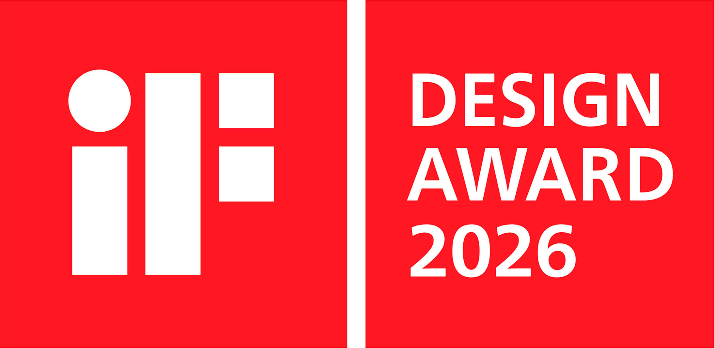
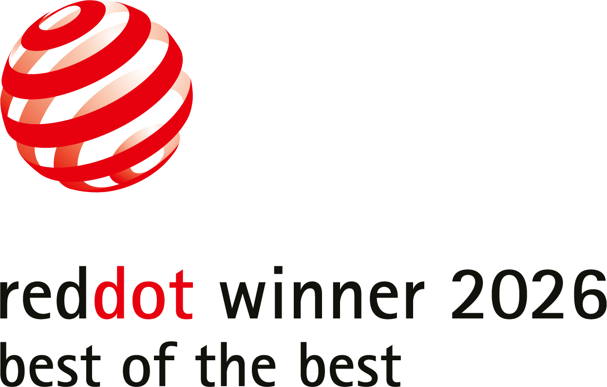
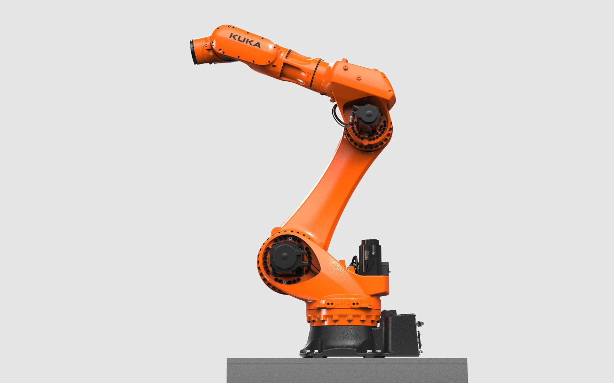
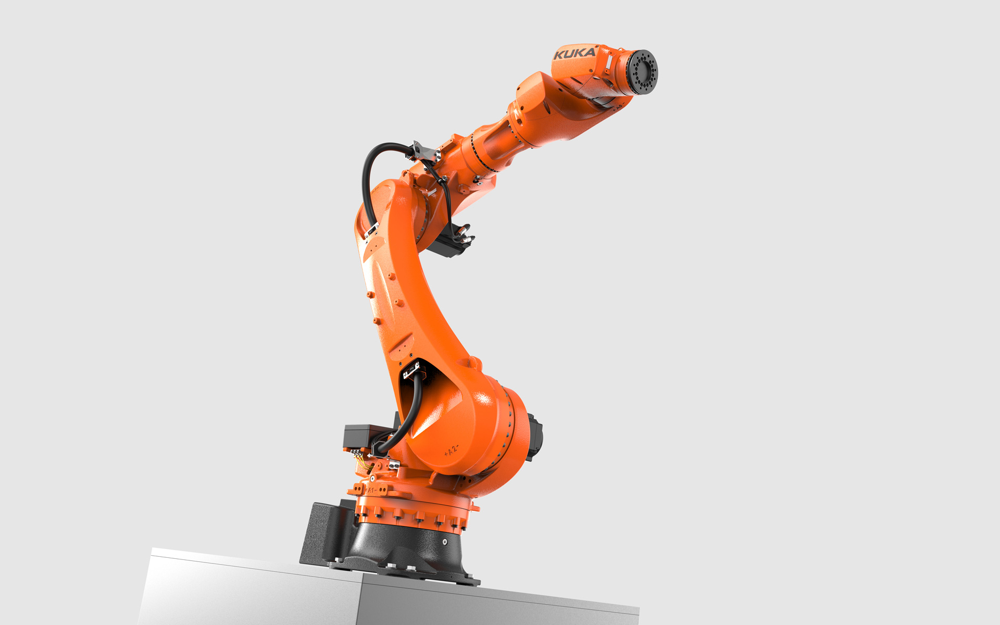
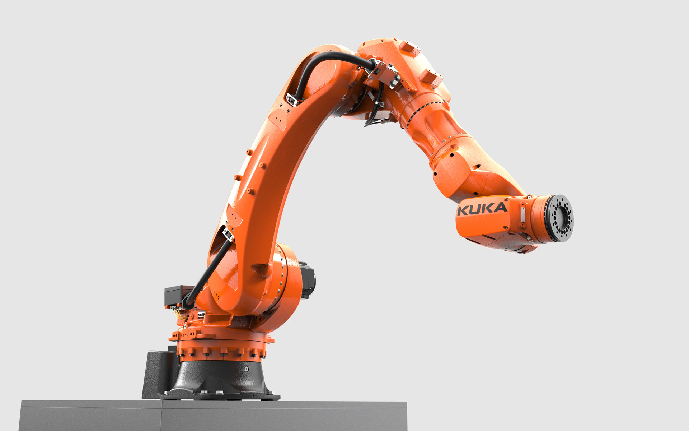
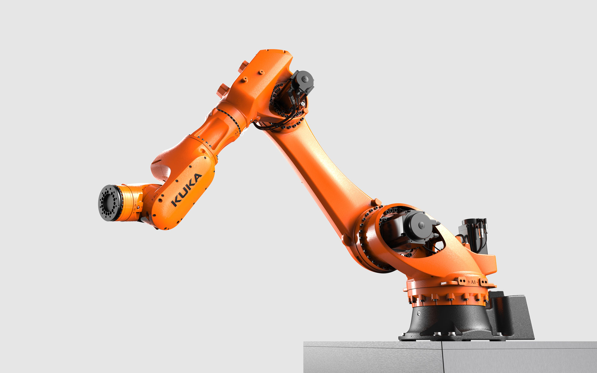
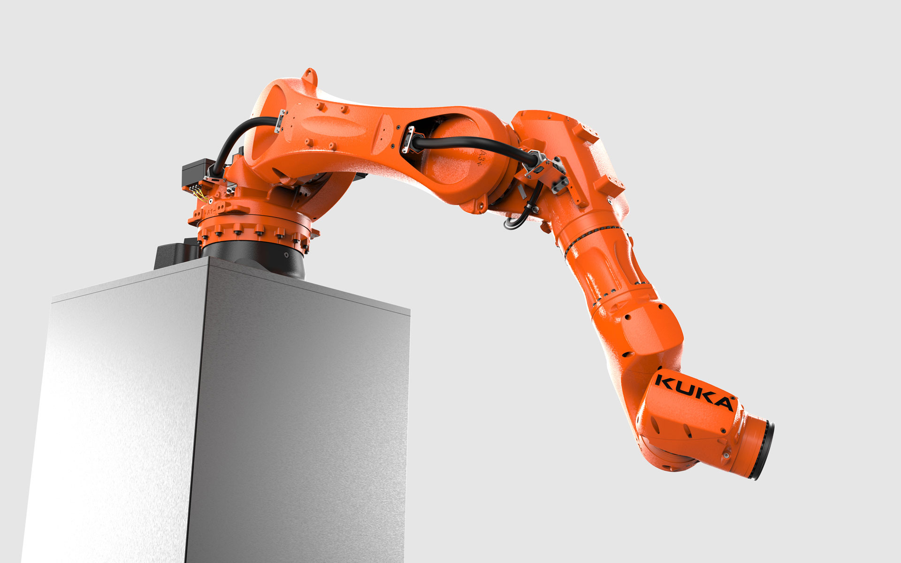

KUKA KR IONTEC ultra
Compact Robot
KUKA KR IONTEC ultra
Kompaktroboter
The KR IONTEC ultra is an extremely compact robot that has been developed for high-precision welding,
assembly, packaging, cutting and separating in the automotive sector and general industry in a matter of
seconds.
With a load capacity of 120 kg, the robot is ideal for handling heavy battery cells in the
electromobility sector.
Thanks to its extremely compact dimensions and small footprint, it is ideally suited for confined
workspaces, enabling the creation of narrow automation cells and thus saving costs. With a reach of
between 2,300 and 2,700 mm, it offers flexible application options. The robot can be quickly integrated
into existing production environments. It is easy to program and simple to operate.
The vibrant appearance shows how compact, agile and powerful the KR IONTEC ultra is. The encapsulated
design of the robot with its internal motors and supply lines in the crucial upper half ensures minimal
interfering contours and guarantees unobstructed operation without entanglement with neighboring
objects. Specifically designed cast components contribute to efficient heat dissipation from the
interior.
It is particularly easy to maintain and designed as a long-term product.
Der KR IONTEC ultra ist ein extrem kompakter Roboter, der für sekundenschnelles, hochpräzises Schweißen,
Montieren, Verpacken, Schneiden und Trennen in der Automotive Branche und der allgemeinen Industrie
entwickelt wurde.
Mit einer Traglast von 120 kg ist der Roboter ideal für das Handling schwerer Batteriezellen in der
Elektromobilität einsetzbar.
Dank seiner extrem kompakten Dimensionen und dem kleinen Footprint ist er optimal für enge Arbeitsräume
ausgelegt, was die Realisierung schmaler Automatisierungszellen ermöglicht und somit Kosten spart. Mit
Reichweiten zwischen 2.300 und 2.700 mm ist er dabei flexibel einsetzbar. Der KR IONTEC ultra lässt sich
schnell in bestehende Produktionsumgebungen integrieren. Er ist leicht programmierbar und einfach zu
bedienen.
Das lebendige Erscheinungsbild zeigt, wie kompakt, beweglich und leistungsstark der KR IONTEC ultra ist.
Das gekapselte Design des Roboters mit seinen innenliegenden Motoren und Versorgungsleitungen in der
kritischen oberen Hälfte sorgt für geringste Störkonturen und stellt einen hindernisfreien Einsatz ohne
Verheddern mit benachbarten Objekten sicher. Gezielt gestaltete Gusskomponenten tragen zur hohen
Wärmeableitung aus dem Inneren bei.
Er ist besonders wartungsfreundlich und als Langzeitprodukt ausgelegt.





Images © Selić Industriedesign